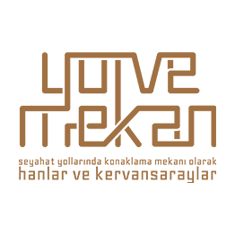

<header>
	<nav class="navbar navbar-expand-xl main-nav">
		<div class="container-fluid">
			<a class="navbar-brand logo" href="#"></a>
			<button class="navbar-toggler" type="button" data-bs-toggle="collapse"
				data-bs-target="#navbarSupportedContent" aria-controls="navbarSupportedContent" aria-expanded="false"
				aria-label="Toggle navigation">
				<span class="bi-list"></span>
			</button>
			<div class="collapse navbar-collapse" id="navbarSupportedContent">
				<ul class="navbar-nav ms-auto mb-0">
					<li class="nav-item">
						<a class="nav-link" href="/home/kütüphane">KÜTÜPHANE</a>
					</li>
					<li class="nav-item dropdown">
						<a class="nav-link dropdown-toggle" href="#" role="button" data-bs-toggle="dropdown"
							aria-expanded="false">
							PROJE
						</a>
						<ul class="dropdown-menu">
							<li><a class="dropdown-item" href="/home/proje-ekibi">PROJE EKİBİ</a></li>
							<li><a class="dropdown-item" href="/home/proje-hakkinda">PROJE HAKKINDA</a></li>
							<li><a class="dropdown-item" href="english-summary.html">ENGLISH SUMMARY</a></li>
							<li><a class="dropdown-item" href="proje-ciktilari.html">PROJE ÇIKTILARI</a></li>
						</ul>
					</li>
					<li class="nav-item">
						<a class="nav-link" href="kaynakca.html">KAYNAKÇA</a>
					</li>
					<li class="nav-item">
						<a class="nav-link" href="/home/detayli-arama">DETAYLI ARAMA</a>
					</li>
					<li class="nav-item">
						<a class="nav-link " href="/home/mapbox">HARİTA</a>
					</li>
					<li class="nav-item">
						<a class="nav-link" href="/home/iletisim">İLETİŞİM</a>
					</li>
				</ul>
			</div>
		</div>
	</nav>
</header>
<router-outlet></router-outlet>
<footer>
	<div class="foot-head-line"></div>

	<div class="foot-menu-holder">
		<div class="container">
			<div class="row">
				<div class="col-xl-3 mb-3">
					
				</div>
				<div class="col-xl-3 mb-3">
					<ul class="foot-nav">
						<li><a href="kutuphane.html">KÜTÜPHANE</a></li>
						<li><a href="kaynakca.html">KAYNAKÇA</a></li>
						<li><a href="/home/detayli-arama">DETAYLI ARAMA</a></li>
					</ul>
				</div>
				<div class="col-xl-3 mb-3">
					<ul class="foot-nav">
						<li><a href="#">PROJE HAKKINDA</a></li>
						<li><a href="proje-ekibi.html">PROJE EKİBİ</a></li>
						<li><a href="english-summary.hmtl">ENGLISH SUMMARY</a></li>
						<li><a href="proje-ciktilari.html">PROJE ÇIKTILARI</a></li>
					</ul>
				</div>
				<div class="col-xl-3 mb-3">
					<ul class="foot-nav">
						<li><a class="black" href="harita.html">HARİTA</a></li>
						<li><a href="iletisim.html">İLETİŞİM</a></li>
					</ul>
				</div>

			</div>

		</div>
	</div>
	<div class="foot-credit-holder">
		<div class="container">
			<div class="row align-items-center">
				<div class="col-12 col-lg-2 col-xl-1 mb-3 text-center"></div>
				<div class="col-12 col-lg-10 col-xl-11">Bu proje Türkiye Bilimsel ve Teknik Araştırma Kurumu tarafından
					desteklenmektedir.</div>
			</div>
		</div>
	</div>

</footer>